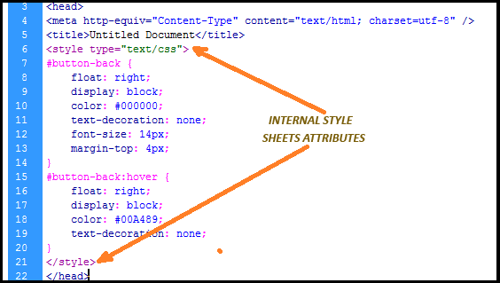
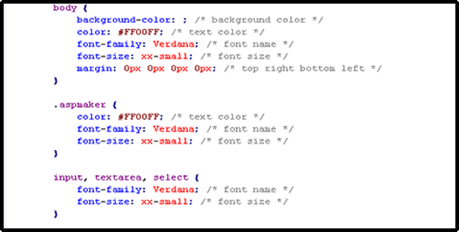
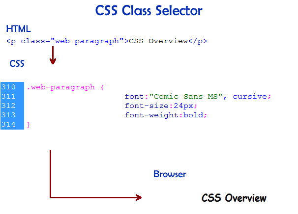

CSS Overview
CSS stands for Cascading Style Sheets. In this page you will be learning how to use CSS style on your website to control its layout and styling of how it dsiplays to the user. Using one Cascading Style Sheet you can write the styling for all the webpages that you have.
When using CSS, you can either write the CSS on the same page as you write the HTML or you could write the CSS on a seprate sheet which only uses to write CSS. If you are using the CSS inside your HTML, remember to have a opening tag as this <style>, and a closing tag of </style>. You can only write the CSS code inside these two tags. Use the <style> in between the head tag. If you decided to write the CSS on a seprate page then create a new css file and write all the codes in that page and link the CSS page that you have created on to the HTML page.
Internal Style Sheet
External Style Sheet
CSS Selectors are used to find an HTML element by their ID, Class, Tag, etc. CSS Syntax consists of a selector and a declaration block where you put the property and value that you want to apply on.
This is an example of the Class Selector
